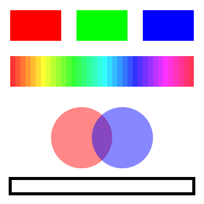

6. 色とスタイル
この章では、図形の塗りと線の色、線の太さを指定する方法を説明します。
6.1. 塗りと線
p5.js の図形は、内側の「塗り」と輪郭の「線」から成り、それぞれ別の関数で色を指定します。
関数 |
動作 |
|---|---|
|
キャンバス全体を指定した色で塗りつぶす。 |
|
以降に描く図形の塗りの色を設定する。 |
|
以降に描く図形を塗らない。 |
|
以降に描く図形の線の色を設定する。 |
|
以降に描く図形の線を描かない。 |
|
以降に描く図形の線の太さをピクセル単位で設定する。 |
既定では、塗りは白、線は黒で太さ 1 ピクセルです。
これらの関数は「以降に描く図形」の設定を変えるもので、設定は次に変更するまで有効です。たとえば fill(255, 0, 0) を呼ぶと、その後に描く図形はすべて赤く塗られます。図形ごとに色を変えたいときは、図形を描く直前に毎回 fill() を呼びます。設定を一時的に変えて元に戻す方法は 座標変換 で説明します。
6.2. 色の指定方法
色を指定する関数は、引数の数によって解釈が変わります。
書き方 |
意味 |
|---|---|
|
グレースケール。0 が黒、255 が白。 |
|
グレースケールと透明度 |
|
RGB。赤・緑・青の強さを 0〜255 で指定する。 |
|
RGB と透明度 |
|
CSS の色名 |
|
16 進数のカラーコード |
透明度は アルファ値 とも呼ばれ、0 で完全に透明、255 で完全に不透明です。半透明の図形を重ねると、重なった部分の色が混ざって見えます。
色を変数に入れて使い回したいときは、color() 関数で色のオブジェクトを作ります。
1const skyBlue = color(135, 206, 235);
2fill(skyBlue);
3circle(200, 200, 100);
color() は p5.js の初期化が終わってから使える関数です。関数の外でグローバル変数を初期化するときには使えないため、setup() の中で呼びます。
6.3. HSB による指定
RGB は画面の表示方式に合った指定方法ですが、「同じ明るさで色合いだけを変える」といった操作には向きません。そのような場合は、colorMode(HSB) で HSB に切り替えると便利です。
要素 |
意味 |
既定の範囲 |
|---|---|---|
H（Hue） |
色相。赤→黄→緑→青→紫と一周する色合い。 |
0〜360 |
S（Saturation） |
彩度。0 で灰色、最大で鮮やかな色。 |
0〜100 |
B（Brightness） |
明度。0 で黒、最大で最も明るい色。 |
0〜100 |
colorMode() の 2 番目以降の引数で、各要素の範囲を変更できます。たとえば colorMode(HSB, 360, 100, 100) とすると、色相を 0〜360、彩度と明度を 0〜100 で指定します。
colorMode() も fill() と同様に、次に変更するまで有効です。RGB に戻すときは colorMode(RGB, 255) を呼びます。
6.4. サンプル
RGB の 3 原色、HSB で色相だけを変えた色の帯、半透明の円の重なり、太い線の長方形を描くサンプルです。
1// RGB、HSB、透明度を試すスケッチ
2
3function setup() {
4 createCanvas(400, 400);
5 noLoop();
6}
7
8function draw() {
9 background(255);
10 noStroke();
11
12 // RGB：赤・緑・青の強さを 0〜255 で指定する
13 fill(255, 0, 0);
14 rect(20, 20, 100, 60);
15 fill(0, 255, 0);
16 rect(150, 20, 100, 60);
17 fill(0, 0, 255);
18 rect(280, 20, 100, 60);
19
20 // HSB：色相を 0〜360、彩度と明度を 0〜100 で指定する
21 colorMode(HSB, 360, 100, 100);
22 for (let h = 0; h < 360; h += 10) {
23 fill(h, 80, 100); // 彩度と明度は固定し、色相だけを変える
24 rect(20 + h, 110, 10, 60);
25 }
26 colorMode(RGB, 255); // RGB に戻す
27
28 // 4 番目の引数は透明度（アルファ値）。重なった部分の色が混ざる
29 fill(255, 0, 0, 120);
30 circle(160, 270, 120);
31 fill(0, 0, 255, 120);
32 circle(240, 270, 120);
33
34 // 線の色と太さ
35 noFill();
36 stroke(0);
37 strokeWeight(6);
38 rect(20, 350, 360, 30);
39}
ダウンロード：
index.html、sketch.js


図 6.1 サンプルの実行結果
22〜25 行目では、色相を 10 ずつ変えながら細い長方形を 36 個並べています。彩度と明度を固定しているため、色合いだけが滑らかに変化します。